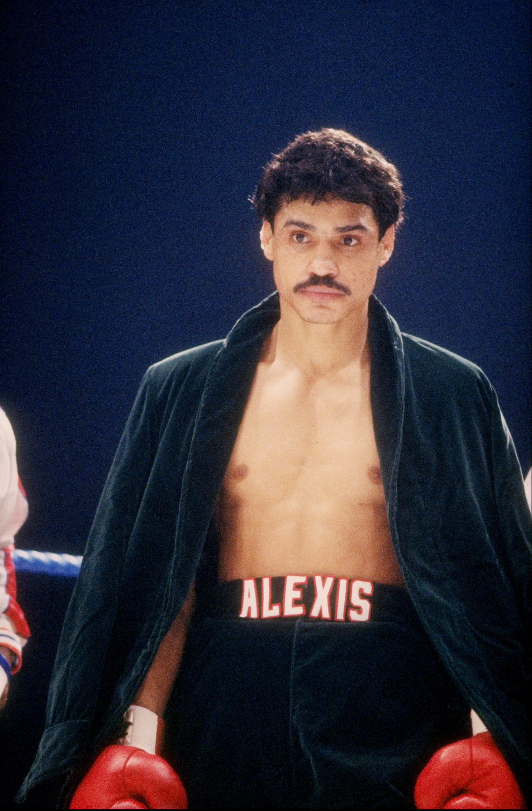
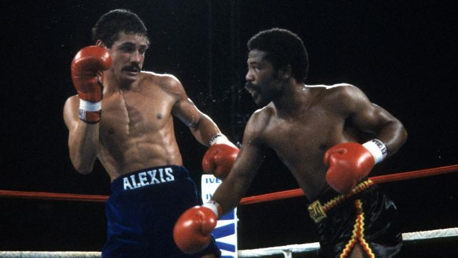
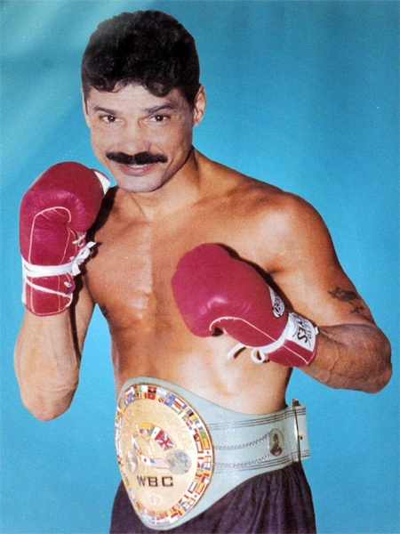

Alexis Arguello, born in 1952 in Managua, Nicaragua, made his professional debut at the age of 19 in 1968. Known for his powerful punching and elegant style, Arguello quickly gained recognition as a talented fighter. His smooth technique and precise punches led him to rise through the ranks in the lightweight and junior lightweight divisions, eventually making him one of the most feared boxers of his time.
One of Arguello's most significant victories came in 1974 when he fought and defeated Scotland's Ken Buchanan for the WBA Lightweight title. Arguello's technical skill and explosive power were on full display as he became a world champion for the first time.
In 1982, Arguello faced the undefeated Aaron Pryor in what would become one of the most iconic battles in boxing history. Despite Arguello's best efforts and incredible skill, Pryor's relentless pace and power led to a memorable victory. This fight, though a loss for Arguello, cemented his place among boxing's greats.
Arguello was a three-weight world champion, known for his precise punches and strategic boxing mind. He held world titles in the Featherweight, Lightweight, and Junior Welterweight divisions. Arguello’s contributions to boxing, both in the ring and as a respected champion, solidified his place in the sport's history.
While Arguello achieved tremendous success, his career was not without struggles. His most memorable defeat came at the hands of Aaron Pryor in 1982, where Arguello, despite his incredible skill, was overwhelmed by Pryor’s aggressive style and stamina. However, Arguello's ability to come back from setbacks and remain a force in boxing is what truly defined his legacy.
